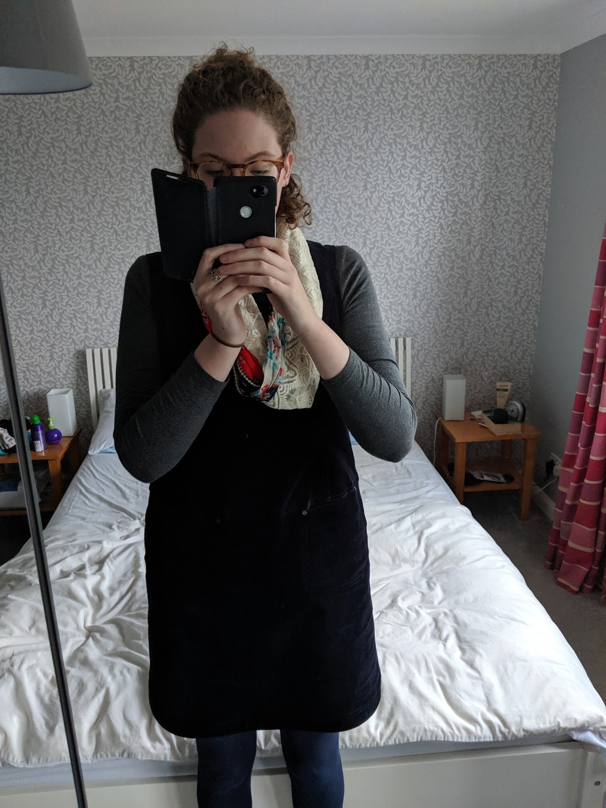

Session 1: The Historical Object
WHAT MY CLOTHING SAYS ABOUT ME...
Although unlikely, our clothing is a cultural text. We use clothing as a disguise, definition of social status and more importantly, a way for us as individuals to express ourselves.
I chose to analyse my pinafore from White Stuff. This is one of my favourite items of clothing, even if I'm not totally sure why.
The pinafore dates back to the early 18th century, and was predominantly worn by Victorian and Edwardian maids as a sign of status and also for functional reasons. One of the most common associations with the pinafore is Florence Nightingale. Nightingale was the founder of modern nursing during the mid to late 1800s. Nurses during this period wore mainly pinafores due to the practicality of the garment. Nurses had to treat the sick and wounded, so needed something that would not impede their work.
Since the time of Florence Nightingale, pinafores have had a resurgence and can now be seen as a fashion statement; the major difference between the eras being, form over function.
I bought my pinafore from White Stuff, a British fashion and lifestyle brand, based in the UK. The pinafore is made of cord and is navy blue in colour. I was drawn to the navy blue as it is very neutral and will always be in 'fashion'. The cord material is thick and robust, so will stand the test of time. Although created more for fashion over form, White Stuff have created an item that will last a long time, whilst being appealing to look at.